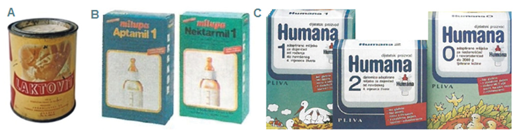

History of infant milk formula
Zgodovina mlečnih formul
Abstract
Optimal nutrition is one of the most important aspects in the care of infants, especially of the preterm infants and neonates. Until the 1900s, an infant’s survival and health were closely related to the availability of breastmilk. Human milk was and still is the best food for nearly all infants. Besides physical growth, human milk offers a variety of other benefits, including modulation of postnatal intestinal function, maturation of immune system, and has a positive effect on brain development. Even though breastfeeding is highly recommended, it may not always be feasible, suitable or adequate. Through history, the evolution of infant feeding included wet nursing, bottle feeding with animal milk and formula use. Wet nursing was the safest and most common alternative to the mother’s breastfeeding before bottles and infant milk formula were invented. However, society’s negative view of wet nursing, together with the invention and improvements of the feeding bottle, the availability of animal’s milk, and advances in milk formula development, gradually led to replacing wet nursing with bottle feeding. Such evolution of infant feeding methods was similar throughout the world and Slovenia followed the trend. In this article, we review the history of different methods of infant feeding, other than breastfeeding, all of which presented an alternative to breastfeeding.
Izvleček
Optimalna prehrana je ključna pri skrbi za dojenčka in nedonošenčka. V preteklosti, do leta 1900, je bilo preživetje in zdravje dojenčka tesno povezano z dostopnostjo materinega mleka. Tudi danes je materino mleko najboljša hrana za skoraj vse dojenčke. Poleg telesne rasti ponuja materino mleko številne druge prednosti, med drugim postnatalno moduliranje funkcije črevesja, zorenje imunskega sistema, pozitivno pa vpliva tudi na razvoj možganov. Čeprav je dojenje zelo priporočljivo, pa ni vedno mogoče, primerno ali ustrezno. Skozi zgodovino so se načini prehranjevanja dojenčkov zelo spreminjali. Vključevali so dojilje, hranjenje s steklenico in kasneje uporabo mlečnih formul. Uporaba dojilj je bila najbolj varna in najpogostejša alternativa za materino mleko, preden so se pojavile prve steklenice in mlečne formule. Negativni pogled družbe na dojilje vzporedno s pojavom prvih steklenic, razpoložljivostjo živalskega mleka in napredkom pri oblikovanju mlečnih formul je postopoma pripeljal do opustitve dojilj in uporabe steklenic za hranjenje dojenčkov. Evolucija različnih metod hranjenja dojenčkov je bila po vsem svetu podobna. Tudi Slovenija je sledila temu trendu. V članku smo pregledali zgodovino različnih načinov hranjenja dojenčkov, ki so alternativa dojenju.
1 Introduction
Traditionally, breast milk was the only nourishment given to infants until they were old enough to move on to solid food. In the past, if mother died during the childbirth or could not breastfeed for some reason (most frequently due to malnutrition), the chances of survival of such infants were low unless wet nursing was used (1). Over many centuries and until 19th century when feeding bottle was introduced, the aristocracy of many cultures hired nurses to feed their babies. With the invention of the modern feeding bottle and nipple, the availability of animal’s milk, and the change in society’s acceptance of wet nursing, artificial feeding became a popular feeding choice (1).
2 The past
2.1 Feeding before milk formulas were developed
Since ancient times, when breast milk was not available, animal’s milk was most often used instead. For that reason animals were often worshipped in many ways. In ancient Egypt, Hathor was a goddess who personified the principles of joy, feminine love, and motherhood. She was one of the most important and popular deities throughout the history of ancient Egypt and was depicted as a cow deity. For that reason, cow was a sacred animal and ancient Egyptians never sacrificed cattle (2). Cows had a special status in Greek mythology as well. According to the legend, Io was one of the mortal lovers of Zeus, who in attempt to protect her from the rage of his wife Hera, transformed Io into a white heifer (3). In India, the cow has been a symbol of wealth since ancient times and in most states of India the slaughter of cattle is prohibited due to the their special status (4). Furthermore, the suckling of animals by infants was frequently described in classical mythology. In Greek mythology Amaltheia is represented as the goat that suckled Zeus in a cave in Crete where he was hidden by his mother. In that way Rhea, Zeus’ mother, saved him from his father Cronus (3). However, the best known legend is from Roman mythology about twin brothers Romulus and Remus, who were portrayed as having been raised by a she-wolf which suckled the infants (3).
The first written document, an Egyptian text, the Papyrus Ebers, with the idea of alternative feeding originates as far back as 1550 BC (1). It is the earliest recorded form of a woman breastfeeding another’s child. In Greece, around 950 BC, women of higher social status frequently demanded wet nurses (5). Later, during the Roman Empire (between 300 BC and 400 AD) written contracts were formed with wet nurses to feed unwanted and abandoned infants who were purchased by wealthy Romans as inexpensive slaves for future use. The wet nurses, who were slaves themselves, fed these infants for up to 3 years (6). From approximately 100 AD through 400 AD, medical authors such as Soranus of Ephesus, Galen of Pergamus, and Oreibasius listed the qualifications for a wet nurse (7). Soranus described criteria to determine the quality of breastmilk, which were used for the next 1,500 years (5). Galen of Pergamus (130 AD to 200 AD) advised the wet nurse how to soothe infants through swaddling, movement, rocking, and singing lullabies (8). Later, the Roman physician Oribasius (325 AD to 403 AD) advised physical activity for wet nurses such as grinding, weaving, and walking. He thought that the physical work should incorporate chest and shoulder movements to enhance the flow of milk. In addition, he also advised wet nurse to be a healthy 25 to 35 year old woman who had recently delivered a male infant (8).
Throughout the Renaissance period, wet nursing remained the best alternative for infants whose mother could not breastfeed. However, as in the Middle Ages, during the Renaissance period society mostly disapproved the wet nursing and insisted that mother should breastfeed their own children. Child was regarded as vulnerable and it was thought that through breastmilk physical and psychological characteristics of wet nurse could be transmitted to an infant. Accordingly, during the mid-16th century, the importance of breastfeeding for an infant by his natural mother became widely recognised (9). In the early 17th century, the French obstetrician Jacques Guillemeau supported the premise that the natural mother should nurse her child (10). Generally, during the Renaissance period wet nursing remained a popular, well paid, and highly organized profession and the occupation became a prime choice for many poor women (9). During the same time period, it was unusual for aristocratic women to breastfeed (10). Wet nursing continued to exist at the end of the 18th century; however, the natural mother was still preferred for breastfeeding and raising her children. In the 19th century, research into infant formula began and artificial feeding became a feasible substitute for wet nursing which gradually led wet nursing profession to extinct (11).
Wet nurses were present in 19th century in Slovenia. Most notable wet nurses were called “Alexandrian Women”. They were named after the city of Alexandria, where the majority of the Slovenian women and girls got their job. The earnings which the Alexandrian women sent home either by post or at times through relatives and friends, enabled their family to survive. Usually the women returned home once the necessary money was earned. The phenomenon started to decrease soon after the Second World War, however, the last women from the Goriška region returned home by the end of the 60ies of the 20th century (12,13).
2.2 Beginning of milk formulas
The idea of sharing milk among species took hold eventually and as the prevalence of wet nursing started to decline, the use of infant formula based on animal milk became more popular. For poor families, who could not afford a wet nurse, animal milk was the only method of feeding available. Goat or donkey milk was thought to resemble human breast milk more closely than cow’s milk because it produced a smaller curd (7). Until the mid-1800s, scientific knowledge concerning the benefits of human milk for neonates was based primarily on the observations of physicians that infants not fed human milk had much less probability of surviving infancy. In the beginning of the 19th century, important developments were made that set the basis for the development of infant formula. First of all, the understanding of the composition of human milk made huge progress and included the comparative analysis of cow’s and human milk. In 1810, Nicholas Appert developed a technique to sterilize food in sealed containers, which allowed the invention of evaporated milk by William Newton 25 years later (1). Next, in 1865, chemist Justus von Liebig developed and marketed an infant food, first in a liquid form and then in a powdered form for better preservation. His formula was considered the first infant milk formula and consisted of cow’s milk, wheat and malt flour (7). In 1878 Biedert was the first one to mention the higher protein content of cow’s milk compared to human milk and suggested that water, sugar, and cream be added to cow’s milk to make it more similar to human milk (14). The marketing of Liebig’s infant food and the invention of evaporated milk allowed many other commercial formulas to rapidly arise (7). By 1883, there were already 27 patented brands of infant food present on the market, which came in powdered form. They were made of milk to which different carbohydrates were added. As a result, such infant foods were fattening, but deficient in valuable nutrients like proteins, vitamins, minerals and trace elements. Over the decades, the nutrients were gradually added (7). However, in the early 20th century formula-fed infants exhibited more diet-associated medical problems than breastfed infants, including scurvy, rickets and bacterial infections. By 1920, the incidence of scurvy and rickets decreased when orange juice and cod liver oil were added to infant milk formulas (7). Bacterial infections remained an important issue. Maltose and dextrins were thought to have nutritional importance, and in 1912 Mead Johnson released a milk formula called “Dextri-Maltose”. However, it was only available through consultation with a physician (15). In 1911 Dr Henry Gerstenberger started to work on developing a nutritious infant milk formula. As a result, in 1915, milk fats were replaced with a blend of animal and vegetable fats to mimic human milk better. This formula was called SMA for “simulated milk adapted” (15,16). As the evolution of infant formula progressed over the years, the emphasis has changed according to the current knowledge. At the beginning of the 20th century the emphasis was placed on the cleanliness and the improvement in the quality of milk supplies. Later on, the focus moved on to the infants allergic to cow’s milk. Scientists tried to solve the issue and began developing non-milk formula that consisted of soy flour, which became available in 1929. Through the years this nutrient deficient formula was transformed into vitamin enriched soy-based formula (16). By 1929, the American Medical Association established the Committee on Foods to approve the safety and quality of formula composition. As the infant formulas became readily available and heavily advertised, the percentage of breastfed infants started to decline. Women and physicians began to believe that breast milk was of poor quality and insufficient. During the same time period, homemade formulas were also popular in Europe. These were made at home by mixing cow’s milk with other ingredients, such as water, cream, sugar or honey in certain ratios to achieve a nutritional profile thought to mimic that of human milk (16). By the 1940s and 1950s, both physicians and consumers regarded infant formula as a safe substitute for human milk, which led to a steady decline of breastfeeding until the 1970s (16). The use of infant milk formulas in hospitals and maternity wards played a major role in their acceptance by families, encouraging their use (15). The movement to promote breastfeeding began as a consequence of low prevalence of breastfeeding during this time period. Numerous government reports were stressing the advantages of breastfeeding. Over the next 40 years, their efforts resulted in a steady increase not only in the percentage of breastfed infants, but also on the duration of breastfeeding (16). In the early 1990, a great leap in breastfeeding promotion activities was made by governments throughout the world. The emphasis was once more put on the importance of breastfeeding in 1991, when the Baby Friendly Hospital Initiative (BFHI), a worldwide programme of the World Health Organization and UNICEF, was launched following the adoption of the
3 The present
Today, every producer offers different varieties of formula, however, most term infants need a standard formula. Its composition differs with respect to the infant’s age; starting formulas (1: 0–6 months) and follow on formulas (2: 6–12 months or 3: 12–36 months). Preterm infants have higher protein and calorie requirements. In addition, they need more calcium, magnesium, and phosphorus. These special requirements led to the development of enriched or preterm formulas. Infant milk formulas are available in three different forms: (i) powder (ii) concentrated liquid, and (iii) ready-to-feed. Due to the frequent contamination of powder infant milk formula with
With respect to the proteins source, there are three major classes of infant formulas: cow- or goat-milk-based (standard) formulas, soy-based formulas and specialized formulas. Specific kinds of formulas were developed to meet a variety of infants’ needs. Most infants tolerate cow-based standard formula well, but if an infant suffers from cow milk protein intolerance, paediatricians will advise specialized formulas (20).
Regardless of the type of infant milk formula, commercial infant milk formulas are all similar in their composition (i.e. caloric value, nutrients added etc.), which is strictly regulated in the US by the Food and Drug Adiministration (FDA) and in Europe by European Commission Directive 2009/141/EC, adopted under the old legislative framework of Directive 2006/39/EC. The Directive lays down the requirements for the composition and labelling of infant milk formulas and follow-on formulas (26). Other organizations that regulate and set guidelines for infant milk formula include: North American Society for Pediatric Gastroenterology, Hepatology and Nutrition (NASPGHAN), American Academy of Pediatrics (AAP), Committee on Nutrition of ESPGHAN, European Society for Clinical Nutrition and Metabolism (ESPEN), American Society for Parenteral and Enteral Nutrition (ASPEN), Americal College of Allergy, Asthma, and Immunology (ACAAI), Codex Alimentarius Commision (CAC), Food and Agriculture Organization (FAO), World Health Organization (WHO), etc. Each manufacturer must follow well-established guidelines set by government agencies. Furthermore, the
4 Trends and new developments in infant formula
Although the main ingredients are strictly regulated by the national and international agencies, formulas may have different protein and fat sources, and some include novel ingredients. This addition of new ingredients to infant milk formulas is usually driven by a manufacturer’s desire to make products that mimic the advantages of human milk and breastfeeding. In the early 2000s, some formulas began to be fortified with long-chain polyunsaturated fatty acids (LC-PUFA) such as AA and DHA (11). Nucleotides are active in the maturation of the gastrointestinal tract and the development of neonatal immune function. These are added to infant formulas at a ratio of 1:1:1:1 for the four major nucleotides (adenine, guanine, thymine, and cytosine). Nucleotides in milk formulas particularly decrease the risk of developing diarrhea. The addition of specific prebiotics and probiotics to milk formulas help protect the host by activating the immune system, and, among other things, protecting both preterm and term infants against pathogens. Enhanced formulas help to improve the fecal bifidobacteria and lactobacilli content to reach near levels found in breastfed infants. Two oligosaccharides oligofructose (FOS) and oligogalactose (GOS) are most frequently used as prebiotics for infant formula manufacturing (24). Many different bioactive proteins (such as α-lactalbumin, lactoferrin, osteopontin, and milk fat globule membrane proteins) are added to infant formulas for their suggested influence on infants’ health (20,28).
5 The future
Through history, scientists sought to formulate non-human milk to resemble that of humans. As nutrition science continues to define the composition and functionality of human milk as a reference, food industry technologies facilitate the design and delivery of nutritional and functional concepts to infant food. Advancement in protein technologies, bioactive LC-PUFA, prebiotics, and probiotics have allowed infant formula composition and functionality, to resemble more closely that of human milk (29). We can only imagine how the improvement of infant milk formulas will develop in the future, from genetically engineered infant milk formulas that contain immunity-enhancing antibodies or antigens, formulas that contain cytokines to formulas containing proteins with genetically excluded allergenic epitopes or formulas with tolerogenic peptides (30).
Nevertheless, the expanding knowledge of both the nutritive and nonnutritive components of human milk and their functions guides the selection and development of novel ingredients, formulations, and processing methods to generate better infant products with targeted benefits including healthy growth and development, as well as long-term health protection. As many outcomes in formula-fed infants still do not match those in breast-fed infants, there are many opportunities for innovations in the future. However, despite all these improvements, the industry will never succeed in producing an unique composition of human breast milk that is adjusted to every infant individually the way the mothers body is able to.
6 Milk formulas in Slovenia
In the past, if a mother in Slovenia did not breastfeed for certain reason, various milk formulas have been available on the market from 1950s on (Figure 1).

The company Wander d. d. was founded in Bern by a Swiss chemist Dr. Georg Wander. Their main product was Ovomaltine. On 2 October 1929, a large factory of Wanderer’s products was opened in Zagreb under the name “Dr. A. Wander d.d.” It was the first factory that produced pharmaceutical-diabetic preparations and distributed them throughout the Kingdom of Yugoslavia. After the Second World War, the company was nationalised and renamed to “Jugodijetetika”. At that time period, Jugodijetetika was the most modern and the only food factory, which offered food products for infants and children. Among products Jugodijetetika offered in 1959 also Laktovit, an infant milk formula (31). Together with Nektarmil from Milupa, which contained honey, these were the first infant milk formulas that were available in former Yugoslavia. In the year 1959 came Miluvit from Milupa, and later, Milumil in 1964, and Aptamil in 1968 from the same producer (32).
In 1969 Jugodijetetika merged with PLIVA d.o.o., an important pharmaceutical company in former Yugoslavija. At that time PLIVA had a Department for Food Product Development and offered quite a few infant milk formulas, among which were Bebimil, Soyamil, Bebiron 75, Laktovit plus, Humana 1, Humana 2, and Humana 9. These were present in Slovenia from 1970s (33,34). However, more than a decade ago PLIVA closed the Department for Food Product Development, and consequently Humana was not available on the market until 2015. Today, Humana from the German producer Humana GmbH is distributed through Pharma Swiss in Slovenia and offers a variety of infant milk formulas, from starting milk and follow-on to specialized infant formulas for particular conditions such as constipation, cow milk protein intolerance, lactose intolerance, etc. (35) (Figure 2).
The first milk formula developed in Slovenia was Pikomil. It was produced by the pharmaceutical company Krka, Novo Mesto, in the year 1994 (36). In 2003, the composition of the formula was revised and adjusted to more closely resemble human breast milk. The composition of amino and fatty acids was improved, and selenium and nucleotides were added to the starting formula Pikomil 1. Follow-on milk, Pikomil 2, which already contained all the necessary vitamins and minerals, was fortified with iron.
Besides infant milk formulas produced in Slovenia, infant milk formulas from different foreign producers are present on the market as well. Milupa GmbH, established in Friedrichsdorf, Germany in 1921, came to Slovenian market in the year 1989. Among the first available milk formulas were the following: Aptamil (later Aptamil Comfort), Pregomin, Aptamil AR, HN 25 for treating diarrhoea, and Aptamil Prematil for premature infants. Later on came Milupa SOM (based on soy milk) and Aptamil HMF (a breastmilk fortifier) for premature infants and infants with low birth weight. In the year 2008 Aptamil Pregomin ADC became available in Slovenia based on whey protein and later Aptamil LF for infants with lactose intolerance. In the year 1995 Nutricia took over Milupa. Later, in 2007, Nutricia became part of Danone group and Danone Nutricia Early Life Nutrition was founded (37).
HIPP is another German company that was founded in 1899 in Oberpfaffenhofen. Their first infant milk formula was launched in 1965, however, their infant milk formulas became available in Slovenia almost 30 years later - during the 1990s (38).
Nestlé is a Swiss food and drink company and it has been the largest food company in the world. In early 2000s Beba optipro 1, 2 and 3 were available in Slovenia. These formulas were produced until 2012 and were followed by NAN H.A. 1 and 2, NAN sensitive, NAN optipro 1, 2, 3 and 4, and PreNAN for premature infants and infants with low birth weight (39).
Novalac came to Slovenia in the year 2004. At that time, the following products were launched: Novalac 1, Novalac 2, Novalac 3, Novalac AC, Novalac IT, Novalac AR and Novalac NF. New infant milk formulas were launched from Novalac in the year 2007. First, Allernova for infants with allergies to cow milk proteins, and then Novalac CC for infants born with caesarean section (later renamed into Novalac CC Complete). Novalac Plus launched in 2014, is a starting milk intended for infants from birth up to 6 months of age, who are partially breast-fed. In 2017, Novalac Aminova for infants up to the age of 6 months with severe cow milk protein allergy came to Slovenian market (40). Little more than a decade ago, Holle infant milk formulas became available in Slovenia. Holle was founded by Albert Diefenbach in Arlsheim in 1933 and is one of the oldest baby food manufacturers in Europe. Holle is interesting as it is one the first certified Demeter companies, which offers a complete range of baby foods in certified organic quality (41).
7 Conclusion
Infant milk formulas are unique because they are the only source of nutrition for many infants during their first 6 months of life. They are crucial to infant health because they must safely
8 Acknowledgments
We are particularly grateful to Nevenka Vrač and Ivan Cerovečki, directors of Development and Research at Atlantic Grupa Croatia for providing valuable historical material on the development of infant milk formula in former Yugoslavia.